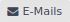
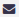
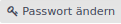

Benutzerbezogene Seiten
Mein Konto
Mein Konto enthält Einstellungsmöglichkeiten, aus denen Du als Anwender für Dich wählen kannst.
Zu diesen Themen kannst Du Anpassungen vornehmen:
-
Name,
-
Lichtbild (Avatar),
-
eine oder mehrere E-Mail-Adressen,
-
Sprache,
-
Passwort und ggf. die 2-Faktor-Authentifizierung,
-
allgemeine Einstellungen zur E-Mail Benachrichtigung und
-
allgemeine Präferenzen.
Der Benutzername, über den die Anmeldung und Autorenkennzeichnung in der Anwendung erfolgt, kann nur durch den Administrator geändert werden.
Pflichteingaben sind Dein Vorname, Dein Name und eine E-Mail-Adresse. Die Sprache wird im Automodus automatisch ermittelt. Du kannst sie aber auch manuell angepassen.
xmera Omnia wird vollumfänglich in den Sprachen Deutsch und Englisch unterstützt.
| Für unsere Kunden stellen wir auf Wunsch weitere Sprachen bereit! |
- E-Mails
-
Neben der Haupt-E-Mail-Adresse Deines Kontos kannst Du weitere E-Mail-Adressen verwalten. Durch Klick auf den Button  öffnet sich ein weiteres Fenster, in dem Du zusätzliche E-Mail-Adressen pflegen kannst.
Der schwarze Briefumschlag  neben der E-Mail-Adresse zeigt an, dass diese Adresse aktiv ist. Ist das Symbol weiß , so ist diese Adresse inaktiv. Durch einen Klick auf das Symbol kannst Due eine Adresse aktivieren oder deaktivieren.
Möchtest Du eine weitere E-Mail-Adresse hinzugefügen, so trägst Du sie in das Eingabefeld unterhalb der Liste ein. Mit Klick auf den Button
 wird die E-Mail-Adresse übernommen.
wird die E-Mail-Adresse übernommen.Über den Button ist das Löschen einer E-Mail-Adresse möglich. Nach dem Klick muss das Löschen nochmals in einem neuen Fenster bestätigt werden. Anschließend wird die E-Mail-Adresse aus der Konfiguration entfernt.
- Passwort ändern
-
Mit dem Klick auf den Button  wird ein neues Fenster geöffnet.

Hier trägst Du das aktuell gültige Passwort und zwei mal das neue Passwort ein. Mit dem Klick auf den Button
 wird Dein Passwort geändert. Eine fehlerhafte Eingabe, weil bspw. die Vorgaben für ein gültiges Passwort nicht erfüllt ist, führt zu einem Abbruch. Du wirst in einem roten Feld darauf hingewiesen, was Du anpassen musst.
wird Dein Passwort geändert. Eine fehlerhafte Eingabe, weil bspw. die Vorgaben für ein gültiges Passwort nicht erfüllt ist, führt zu einem Abbruch. Du wirst in einem roten Feld darauf hingewiesen, was Du anpassen musst. - 2-Faktor-Authentifizierung
-
xmera Omnia bietet die Möglichkeit sich über eine 2-Faktor-Authentifizierung (2FA) mit Hilfe eines One-Time-Passworts (OTP) anzumelden. Ist diese für ein Konto nicht eingerichtet, so kannst Du durch Klick auf Authentifizierungs-App aktivieren die Einrichtung der 2-Faktor-Authentifizierung beginnen.
Es erscheint ein Fenster zum Einrichten der 2-Faktor-Authentifizierung.
Diese Maske zeigt Dir den Schlüssel als QR-Code und als Klar-Text-Schlüssel an. Diesen Schlüssel überträgst Du in die Authenfizierungs-App.
Anschließend generierst Du mit der Authentifizierungs-App ein OTP. Die Zahlenreihe wird in das Feld Code übertragen. Nach dem Klick auf Aktivieren ist die 2-Faktor-Authentifizierung eingerichtet.
Danach hast Du weitere Bedienmöglichkeiten.
Zum Deaktivieren der 2FA klickst Du auf den Link Deaktivieren. Damit erscheint die Aufforderung das OTP aus der Authentifizierungs-App einzugeben. Ist dieses erfolgt, ist die 2-Faktor-Authentifizierung deaktiviert.
Der Backup-Code hilft Dir, wenn Dir die Authentifizierungs-App nicht zur Verfügung steht. Für diesen Fall wird mit dieser Funktion eine Liste von Codes erstellt, mit denen Du ersatzweise arbeiten kannst. Um diese Liste zu generieren, klickst Du auf den Link Backup-Codes generieren. Es erscheint ein Fenster, in dem Du den aktuellen OTP-Code einträgst. Anschließend wird die Liste der Backup-Codes ausgegeben.
Die Liste sollte ausgedruckt und an einem sicheren Ort verwahrt werden.
Mein Profil
Das Benutzerprofil enthält verschiedene nutzerbezogene Daten, die je nach Konfiguration von anderen Nutzern des Systems eingesehen werden können. Das Profil ist im Nutzermenü durch Klick auf den Benutzernamen erreichbar.

Die Sichbarkeit von Benutzerprofilen wird im Administrationsbereich über die Rollendefinition gesteuert.
Meine Seite
Meine Seite dient Dir als Übersicht über all Deine Arbeiten und Informationen, die für Dich wichtig sind. Meine Seite erreichst Du über das Topmenü.
Die Informationen werden auf der Seite in Blöcken zur Verfügung gestellt. Du kannst dabei die Blöcke nach Deinem Wunsch zusammenstellen und positionieren.
Block hinzufügen:
Über das Auswahlfeld Hinzufügen: können verschiedene Informationsblöcke der Seite hinzugefügt werden.
Durch Klicken auf den gewünschten Informationsblöcke wird dieser an oberster Position eingefügt. Wenn eine Parametrierung des Blocks notwendig ist, wird die Konfiguration beim Platzieren des Blocks direkt geöffnet.
Die Bearbeitung der Blöcke ist gleich der Bearbeitung der Blöcke des Dashboards.